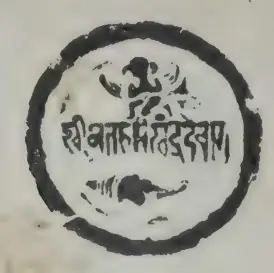

Sanjan plates of Amoghavarsha I : Saka-Samvat 793
No. 26.—SANJAN PLATES OF AMOGHAVARSHA I: SAKA-SAMVAT 793.
BY PROFESSOR D. R. BHANDARKAR, M.A., PH.D., CALCUTTA.
The copper-plates, which are being edited here for the first time,9 were originally lying with my brother, the late Professor Shridhar Ramkrishna Bhandarkar, Elphinstone College, Bombay. They were originally discovered, so I was told by him, at Sanjān in the Thāṇā District, Bombay Presidency, and were forwarded to him for decipherment by a Parsi friend of his, whose name I do not know.
At my suggestion, however, Professor S. R. Bhandarkar published a note on two verses from this grant to show the contemporaneity of the Rāshṭrakūṭa king Gövinda III, the Pratihāra ruler Nāgabhaṭa, the Kanauj sovereign Chakrāyudha, and the Gauda king Dharmapāla.10 These plates constitute the first genuine record of the Rāshṭrakūṭa king Amōghavarsha, hereupto known. It is true that many inscriptions of his time have come to light, but none of them seems to have directly emanated from him. The best known of these is the Konnūr stone inscription of Śaka 782 which, however, is not an original record of the
1 Prosopis spicigera.
2 For muyyalikuṭtu see above, Vol. IV, p. 96, note 4.
3 [The word paruvulu has been taken to be the plural of para—a salt marsh.—H. K. S.]
4 Here the two fields specified in lines 52-55 are added up.
5 This is only a half-verse.
6 The word yabōnidhi is perhaps a general epithet, and not a proper name. The kaṭakēśa probably was Durgarāja himself. Cf. above, Vol. IX, p. 50.
7 A village named Vaṅgiparū is mentioned four times in a grant of Narēndramṛrigarāja; see Ind. Ant., Vol. XX, p. 418.
8 i.e., Virōpādhyāya of Ghanavaṭṭa. For ōja see above, Vol. VIII, p. 140, note 8, and Brown's Telugu-English Dictionary, s.v. ōju.
9 Here I wish to thank my pupils Messrs. Rakhohari Chatterjee and Chintaharan Chakr. v.arti, to whom a good deal of credit is due for this work.
10 J. B. B. R. A. S., Vol. XXII, p. 116 and ff.
inder but professes to be a mere copy of a copper-plate charter of his, prepared about the middle of the 12th century A.D.
The plates are three in number, each about 18" long and 10" broad. The edges of them all are fashioned slightly thicker, so as to serve as rims for the protection of writing. The record is inscribed on the inner side of the first and third plates and on both sides of the second. The plates are strung together by a stout elliptical ring of about 4" and 3" in diameter and of about " in thickness, passing through holes on one side of each plate. The ring was intact when the plates were examined. The ends of the ring are soldered into a roughly square seal, which measures 1" in height and breadth, and bears, in relief, on a counter-sunk surface, as the principal figure, an image of Garuđa, on a lotus seat facing full front, with his prominent beaknose and holding a snake in each hand. Two discs are seen above the ears of Garuđa, but it is difficult to say what they represent. On Garuđa's proper right, there is a representation of Ganapati in the upper corner, and lower down an indistinct chaurī and a lamp. On his left, near the top is some goddess, standing in front of an animal (perhaps a lion) and holding a ladle in her right hand; below her is a chaurī, and, near the bottom, a Svastika.1 Beneath the central figure are in relief the letters: Šrīmad-Amōghavarshadēvasya.
The engraving is clear and on the whole well-executed, but the record is full of inaccuracies due chiefly to the incorrect draft written by the scribe on the plates. The characters agree fully with those of other Rāshṭrakūṭa records of the period. The language is Sanskrit throughout. Excepting the introductory "Ôm Svasti," the inscription is in verse down to line 57 (Third Plate). As regards metrology attention may be drawn to verses 23 and 39. The metre of these is Mattēbhavikrīđita, which is not found in classical literature.2 It is not noticed in the Sūtras of Pingala, Vrīttaratnākara or Chhandōmañjarī, but is described in the Chhandōmañjarī-parišishṭa as sabha-rān-mau ya-la-gās=trayōdaśa-yatir=Mattēbhavikrīđitam. As regards orthography I might say that (1) v is almost invariably written for b; (2) a consonant is invariably doubled after r, in the case of y, n, t, m, dh, n, p, k, and also v when not followed by y (cf. nirvyapēkshañ in l. 7), but not always in the case of g and j (cf. Karahađa-vinirggata in l. 60 and yaśōrĵjana in l. 20, but vishaya-vinirggata in l. 61 and r-ōrĵita in l. 8); (3) Visarga when followed by ś, sh or s is, as a rule, changed to that letter; (4) gh for h is found in one instance only (cf. Ayōdhyasiṅghāsana in l. 8, Pl. I); (5) final n is sometimes replaced by m (cf. sva-bhrityāñ jhaṭiti in l. 13, and tāni bhūbhrīto in l. 15) and m by ñ (in gādhañ-gajai°, l. 21, very rare); (6) upadhmānīya is frequently though not invariably used (cf. bhēdaḥ=paśūnām=iva, l. 40, but not in turagaiḥ pītañ=cha, l. 21); (7) the vowel ri and the syllable ri are sometimes interchanged (thus in kīrttis=trīlōkyān, l. 33, and trīṇāgra-lagna, l. 71); (8) t is, as a rule, doubled when followed by r; and lastly (9) in prose portions Visarga is retained in some instances where it should be replaced by o (cf. paśchimataḥ Nandagrāmaḥ in l. 65, Pl. III), and in some places where it should be elided (cf. Dakshiṇataḥ Uppala°, etc., in l. 65).
The first thing that strikes one about the contents of this grant is that some of its verses are identical with those in the Konnūr Inscription of Amōghavarsha published by the late Prof. Kielhorn.3 Thus verses 2-15 of the latter are identical with stanzas 2-3, 6, 8, 10-12, 27, 29, 36, 45, and 50-53 of the former with slight variations in some cases. With reference to the Konnūr Inscription, Prof. Kielhorn expresses the opinion about the middle
1 The figures on the seal are on the whole similar to those of the Cambay plates. (Above, Vol. VII, pp. 26-7.)
2 [For the use of this metre in Kanarese inscriptions as well as literature see, for instance, above, p. 197, v. 4, p. 205, v. 1, p. 207, v. 3, etc., Vol. XVIII, p. 172, v. 1, or Epigraphia Carnatica, Vol. IV, part II, p. 384, Inscription No. 76, of Nāgamaṅgala Taluq and Ādipampa's Ādipurāṇa, quoted in Karṇāṭaka Kavicharitē, Vol. I, pp. 26-27, or Nāgavarman's Kāvyāvulōkanam, p. 10, v. 59, or Āṇdāyya's Kabbigara Kāvaṅ (Karṇātakā Kāvyamañjarī Series No. 2), p. 5, v. 19.—Ed.]
3 Ep. Ind., Vol. VI, pp. 29 and ff.
of his paper that “ the genealogy was concocted some time after the date which is recorded in this inscription, and has not been copied from a genuine copper-plate charter of Amōghavarsha I.” The same view he sets forth more clearly at the end of that paper. “ Stating distinctly what I have indicated above,” says he, “ I consider it possible that lines 1-59 of this inscription really were based on a copper-plate charter ; at the same time, I feel certain that, if such was the case, the transcribers have taken so great liberties with the original as to deprive this ‘ copy ’ of the value of an authentic document.” The present plates, however, enable us to decide how far Kielhorn’s opinion is correct. A comparison of lines 1-14 of the Konnūr Inscription with the genealogical portion of these plates leaves no doubt as to the lines 1-59 of the former being copied on stone from a genuine charter of Amōghavarsha I, as the concluding part of it informs us. But what about the glaring blunders in the genealogy which Kielhorn has detected in the Konnūr Inscription ? How did they arise ? In the first place, in our plates also the father of Gōvinda I is called Prichchhakarāja, as the same verse occurs in both the records. Prichchhakarāja may be a new name not known from previous Rāshṭrakūṭa grants, but that does not mean that it is a fabrication. And, as a matter of fact, it may be another name of Indrarāja who is mentioned as the father of Gōvinda I in the fragmentary Ellorā Daśāvatāra cave temple inscription.1 Again; Kielhorn says that the Konnūr Inscription makes Prabhūtavarsha (-Gōvinda II) a son of his younger brother Dhārāvarsha, and consequently Prabhūtavarsha (-Gōvinda III) not a nephew but a son of the former. This discrepancy, flagrant though it appears, can be easily explained away by the mention of the fact that Dhārāvarsha-sutas of the inscription is a misreading of the transcribers for the correct wording Dhārāvarshas=tatas, such as that supplied by our grant. Then, again, Kielhorn tells us that in the Konnūr epigraph Karkarāja I is called Karkara, an apparently later form of the name. Here, also, the transcribers must have read Karkkara-prabhuḥ wrongly in place of Karkkarāṭ prabhuhḥ as appears in our grant. And it can scarcely be disputed that Karkkarāṭ is precisely the same word as Karkkarāja. This name occurs in v. 4 of the Konnūr record, which, however, begins with Iṇḍdr-āvanīpāla-sutēna dhāriṇi instead of dhanus-samutsārita-bhūbkṛitā mahī as in our plates. This discrepancy alone is of a serious character as it makes Indra not a son but father of Karkkarāja. It is, however, possible to get over this difficulty by taking Iṇḍdr-āvanīpāla-sutēna as a bahuvrīhi compound. In this connection we have to bear in mind the fact that of all the verses common to the Konnūr Inscription and our charter, this is the only stanza where one whole line is entirely different. Was it deliberately composed and inserted or is it an example of sheer carelessness ? If the introductory portion of the former is compared to that of the latter, it will be seen that the former, as it were of set purpose, wants to bring the genealogical account into the narrowest possible compass. This is quite clear from the fact that verses 12 and 27 of our charter, which are the same as verses 8 and 9 of the Konnūr Inscription, are connected with each other in the latter record by the two words: tasya sutah. It is not impossible that the transcribers are responsible for this abridgement as their main object must be to give in full only those details that relate to the grant proper and curtail them rigorously in all other respects. And it is not inconceivable that in their zeal to epitomize the genealogy they may have coined the line Iṇḍdr-āvanīpāla-sutēna dhāriṇi, which if we take it to be a bahuvrīhi compound, can be made to yield the sense that Indra was the son of Karkkarāja, and can thus make one verse serve the purpose of two.
The charter is one of the Rāshṭrakūṭa prince Amōghavarsha described in ll. 57-58 as the Parama-bhaṭṭāraka-Mahārājādhirāja-Paramēśvara-Pṛithvivallabha the prosperous Vallabhana-rēndradēva, who meditated on the feet of the Paramabhaṭṭāraka-Mahārājādhirāja-Paramēśvara,
1 Arch. Surv. West. Ind., Vol. V, p. 87.
the prosperous Jagattungadēva. It records that in the Śaka year 793 when Amōghavarsha was staying at Mānyakhēṭa, his capital, he granted to four Brāhmans the village of Jharivallikā from the Twenty-four-village Group adjacent to Sanijāna for the purpose of maintaining the bali, charu, vaisvadēva, agnihōtra and atithitarpaṇa sacrifices. The donees are all Brāhmans of the Bahvṛicha-śākhā. Two of them, namely, (1) Narasiniha-Dikshita, son of Gōla-Shaḍangavid and grandson of Sāvikūvāra, and (2)!Rakshāditya-Kramavid, son of Gōvinda-Bhatṭa and grandson of Bhatṭa, were of the Bharadvāja-gōtra. The third, Trivikrama-Shaḍangavid, son of Vishṇu-Bhatṭa, grandson of Dāvaḍi-Gahiyasahāsa, belonged to the Vaḍḍamukha-gōtra; and the fourth and last, Kēśava-Gahiyasahāsa, son of Gōvāditya-Bhatṭa and grandson of Hari-Bhatṭa, was of the Vatsa-gōtra. They all hailed from the same district, namely, Karahaḍa. They were probably the Karhādā Brāhmans.
Having thus disposed of the formal part of the grant, we shall now see what historical information can be gleaned from the introductory metrical portion, which sets forth the genealogy. After the introductory Om, it opens with the well-known invocatory verse with which most of the Rāshṭrakūṭa records begin. The next verse is in praise of Vira-Nārāyaṇa, by whom is here to be understood not only the god Nārāyaṇa, the originator of the Rāshṭrakūṭa family, but also Amōghavarsha, the Rāshṭrakūṭa king, the donor of the grant, who bore that epithet. In verse 3 we are told that in the line of the Yadus there was a king Gōvinda, son of Pṛichchhakarāja. This Gōvinda is, of course, Gōvinda I of the Rāshṭrakūṭa dynasty of Mānyakhēṭa. He was succeeded by Karkka, on whom nothing but conventional praise is bestowed in vv. 4-6. Verse 7 says that after him came Indrarāja, who married the daughter of a Chālukya king at Khēṭaka by the Rākshasa form of marriage. This clearly shows that the Rāshṭrakūṭas, in the time of Indrarāja, came first into hostile contact with the Chālukyas not of the Dekkan but of Gujarāt, for the seat of this Chālukya power is mentioned as Khēṭaka, the same as Kairā in North Gujarāt. These Chālukyas must, therefore, be the Gujarāt branch of the main dynasty ruling at Bādāmi. In this connection is worth noting the Āntrōli-Chhārōli (in Surat) copper-plate grant of Kakka, dated Śaka 679=A.D. 757.1 This record mentions—(1) a Rāshṭrakūṭa prince named Karkka, (2) his son, Dhruva, (3) his son, Gōvinda, and (4) his son, Karkka II, with whose name are coupled the titles Mahārājādhirāja, Paramēśvara and Parama-bhaṭṭāraka. One feels exceedingly tempted to say that the third and fourth of these princes are identical with their namesakes who preceded Indrarāja, father of Dantidurga. One is, however, confronted with the difficulty that whereas under this supposition we have the date Śaka 679 for Karkka, we have Śaka 675 for his grandson, Dantidurga, supplied by his Sāmangaḍh charter. This difficulty, however, is not insuperable, because there are reasons to doubt the genuineness of this last record. That the portion of it relating to the details of the village granted has been tampered with was pointed out long ago by Dr. Fleet when he edited the inscription.2 And the authenticity of the record as a whole has recently been called in question by Dr. V. S. Sukthankar on palæographic grounds.3 Thus the date furnished by the Sāmangaḍh grant is not above doubt, and the identification just pointed out may hold good. We may thus take it that before the time of Dantidurga his predecessors were occupying South Gujarāt.
Verse 8 tells us that Indrarāja was succeeded by Dantidurga, of whom the next verse says that when in Ujjain the various Kshatriyas performed the ceremony, namely, the Great Gift of Hiranyagarbha, he made the Gurjara and other lords his door-keepers (pratihāra). The verse evidently means in the first place that Dantidurga either performed himself or took a
1 F. Kielhorn's List of Inscriptions of Southern India, No. 54.
2 Ind. Ant., Vol. XI, p. 110.
3 Above, Vol. XIV, p. 121, n. 5, and p. 122.
prominent part in this Hiranyagarbha ceremony in Ujjain. And this receives confirmation from a stanza occurring in the Daśāvatāra cave temple inscription at Ellorā.1 This inscription gives Mahārāja-Sarva as another name apparently for Dantidurga, and claims that in that very Ujjain, in order to enjoy a diversion with other princes, he instituted a mahā-dāna worthy of kings, and poured all kinds of wealth and precious stones on the supplicants. There can, therefore, be no doubt that Dantidurga had gone to Ujjain and performed the Hiranyagarbha ceremony. Secondly, verse 9 of our grant also implies that at Ujjain was then ruling a Gurjara dynasty called Pratīhāra. There can be little doubt that this must be the Pratihāra dynasty, that became supreme after seizing the throne of Mahōdaya. We know for certain from epigraphic records that their capital became Mahōdaya or Kanauj from the time of Bhōja I onwards. But we did not know with certitude where they were actually ruling before they became rulers of Kanauj. And it was a mere surmise when some scholars thought that it was Bhilmāl or Bhinmāl in South Rājputānā.2 Our grant, however, enables us now to say definitely that their original seat of power was Ujjain. It also enables us to interpret properly the third line of the stanza so often quoted from the Jaina Harivamśa of Jinasēna. We can have no doubt now as to the correctness of Dr. Fleet's translation,3 which makes Vatsarāja king of Avantī. This Vatsarāja, of course, is the Vatsarāja of the Imperial Pratīhāra dynasty, and the Jaina Harivamśa may be regarded as strengthening the inference that the Pratihāras were established at Ujjain and not Bhilmāl before they transferred their capital to Kanauj. Dantidurga was succeeded by Śubhatuṅga Vallabha (v. 10), that is, Kṛishṇa I, who is represented to have seized the Chālukya sovereignty. He was followed by Prabhūtavarsha, that is, Gōvinda II, and the latter by Dhārāvarsha, that is, Dhruva (v. 12). Verse 13 contains no historical information, but the verse following says that Dhruva snatched away the royal parasols of the king of Gauḍa as he was fleeing between the Ganges and the Jumna. This Gauḍa king, who would be a contemporary of Dhruva, is either Dharmapāla or his father Gōpāla, of the Pāla dynasty. From the inscriptions of this family, however, Gōpāla does not seem to have been in any way a powerful prince; and we must, therefore, suppose that Dharmapāla was the Gauḍa prince defeated by Dhruva. But the curious thing about this victory is that he was defeated not in his own country but outside. Does this not show that the Gauḍa prince had gone outside his dominions, perhaps, to help the king of Kanauj? This agrees with the fact, mentioned in the Baroda plates, that Dhruva seized the territory between the Ganges and the Jumna and thus added the emblems of the two rivers to his imperial insignia.4 This territory certainly coincides with the Kanauj kingdom, and what appears to have happened is that when, after defeating Vatsarāja, Dhruva was pressing his victories northwards, the Gauḍa king must have made common cause with the Kanauj sovereign, but that, when the Rāshṭrakūṭa prince inflicted a crushing defeat on the latter, he began to pursue the former and encountered him before he was able to reach his dominions. Verse 15 says that Dhruva's fame, which had already spread as far as the extremities of the earth, now extended to the heavens, implying that he died. The next verse furnishes Nirupama as an epithet of Dhruva, and tells us that, as soon as his son Gōvinda III was crowned king, he re-instated some of the feudatories in their own principalities, and, apparently against the wishes of his councillors, in particular, released the Gaṅga prince, who, as we know from the records, was imprisoned by his father. This move
1 Arch. Surv. West. Ind., Vol. V, p. 88.
2 Jour. R. As. Soc., 1909, p. 57; Smith's Early His. Ind., p. 378.
3 Above, Vol. VI, pp. 195-6. Verse 9 of this charter of Amōghavarsha was communicated to Dr. R. C. Majumdar for being utilised in his paper entitled the Gurjara-Pratīhāras published in the Jour. Dept. Letters (Cal. Univ.), Vol. X (p. 25 and ff.).
4 Dr. Majumdar was the first to show that this verse of the Baroda Plates (Ind Ant., Vol. XII, p. 159) was to be taken as referring to Dhruva, and not to Gōvinda III as had been done by Dr. Fleet (Jour. Dept. Letters, Vol. X, p. 35, n. 2).
was apparently dictated by the disaffection among the vassal kings who had transferred their allegiance from him to another overlord (v. 17). This is evidently a reference to his contending, immediately after his accession, against a confederacy of twelve kings led by Starinbha, who can be no other than his elder brother Raṇāvalōka-Kambhadēva.1 This opposition, however, he quickly put down. But the Ganga, whom he had released, refused to pay the fine imposed on him and had to be put in fetters again (v. 18).
Verses 19-20 contain nothing but conventional praise of Gōvinda III, but the second of these supplies for him a new epithet Tribhuvanadhavala, not known from previous records. From v. 21 begins the description of his expedition of conquest in the north. He appears first to have encountered and defeated Nāgabhaṭa and Chandragupta. Who the second of these princes was it is not difficult to say. The only prince of that name who can be a contemporary of Gōvinda III is Chandragupta of the Kōśala country ruling at Śrīpura or Sirpur in the Central Provinces.2 The name of the family to which he belonged was Pāṇdava, but there can be no doubt that it was one of the paramount dynasties of the eighth and ninth centuries. As regards Nāgabhaṭa, the other prince vanquished by Gōvinda III, there can be no question that he pertained to the Imperial Pratīhāra family and was the son of Vatsarāja, king of Avantī, referred to above. His victorious march in the north, as verse 23 tells us, continued till his horses drank and elephants plunged themselves into the spring waters of the Himālayas. And it was here that two more princes, Dharma and Chakrāyudha, seem to have offered him their submission. This verse winds up by saying that he thus resembled the Himālayas in kīrti or fame, and, therefore, came to be known as Kirtinārāyaṇa, which, we know, was another epithet of Gōvinda III. Of the two kings who submitted to him as he approached the Himālayas, Dharma has been recognised to be Dharmapāla of the Pāla dynasty, and Chakrāyudha to be the prince of the same name who obtained the sovereignty of Kanauj through Dharmapāla.3
From the Himālayas Gōvinda III returned to the Narmadā; and, turning to the east, he went along the bank of the river, conquering the Mālava, Kōśala, Kaliṅga, Vaṅga, Dāhala and Oṅraka countries (v. 24), and in this connection we are informed of another title that he bore, namely, Vikrama. Making his enemies submissive, he followed the other part of the river and established himself in a capital at the foot of the Vindhyas (v. 25). From verse 26 it appears that he was then in the kingdom of a small ruler, called Mahārāja Śarva, and in the same verse we are further told that while he was encamped there, a son was born to him who was known as Mahārāja Śarvan and about whom, verses 27-8 tell us that the astrologers predicted a happy and brilliant future. Evidently there is a pun here on the terms Mahārāja and Śarvan. In one case they are taken as two separate words referring to a Mahārāja called Śarvan, no doubt, the Chief in whose principality Gōvinda III was temporarily settled on the banks of the Narmadā and at the foot of the Vindhyas; and, in the other case, the two terms are to be taken together so as to make Mahārāja Śarvan as the royal title by which we know Amōghavarsha, son of Gōvinda III, was known.4 What verse 26 intends us to understand is that as Gōvinda III was turning to the west of the Narmadā and was temporarily established in the petty kingdom of his feudatory Śarvan, Amōgh varsha was born. Similar information is contained in two other copper-plate grants of this king which tell us that after receiving the submission of the Mālava king, he marched to the Vindhyas, where a prince named Mārāśarva conciliated him with his choicest heirlooms, and that he spent the rainy season at a place called Śrībhavana.5 Mārāśarva
1 Fleet's Dyn. Kan. Distr. (Bomb. Gazet., Vol. I, pt. II), p. 395. Above, Vol. VI, p. 195.
2 Kielhorn's List of Inscriptions of Northern India, No. 617. Above, Vol. XI, p. 185 and ff.
3 J. B. B. R. A. S., Vol. XXII, pp. 118-9.
4 Above, Vol. VI, p. 174.
5 Ibid., p. 250.
is evidently the same as Mahārāja Śarvan, and Śrībhavana must be the capital of the principality of this ruler where Gōvinda III was encamped for the rainy season and where his son Amōghavarsha was born.
Verse 29 makes mention of the two titles which were borne by Gōvinda III, namely, Prabhūtavarsha and Jagattuṅga; and the two verses following inform us that from this encampment in the Vindhyas he afterwards set out to attack and humble the Draviđa kings. Who these Draviđa kings were is made clear in verse 32, and it appears that in this expedition to the south he vanquished the Kēraļa, Pāndya, Chaulika (Chōļa) and Pallava. With these are also coupled in the same verse the rulers of Kalinga and Magadha and the Gurjara to show that he was rightfully styled Vikrama. Then we are told that, presumably in this excursion, he chained and put to death certain Gaṅga princes who had become disaffected (v. 33). They apparently do not include the Gaṅga ruler referred to in verse 18 above, and probably belonged to more than one Gaṅga family. Which these were exactly it is difficult to say. One of these was certainly the Western Gaṅga dynasty ruling over the Gaṅgavāđi province, and the other is probably what is called the Gaṅga-Pallava family.1 The second half of verse 33 informs us that he made his campground free of dust through the lords of maṇdalas by compensating them if they were friendly and by subjecting them to forced labour if they were otherwise, such as the Vēngi ruler was. This fact is also mentioned in the Rādhanpur charter of that king. Where this camp is to be located is not certain,2 but it seems to be Hēlāpura of the next verse,—a place from where he is represented to have enforced the obedience of the king of Lankā (Ceylon) and his minister. As a result of this obedience he seems to have received two statues apparently of Rāvaṇa,3 its most ancient and traditional ruler, which he, however, transferred to Kāñchi, and put up as two columns of fame before the temple of Śiva. Where can this Hēlāpura be located? According to the Rādhanpur grant4 he was then encamped either on or near the Tuṅgabhadrā. Can this Hēlāpura be thus Vēlāpura or Bēlūr5 in the Hassan District of the Mysore State?
Verses 35-36 speak of the death of Gōvinda III and the accession of his son, Amōghavarsha, to sovereignty. The subsequent four verses inform us that just when Amōghavarsha came to the throne, some of his feudatories, ministers and even relatives became disaffected and raised the standard of revolt. But it was through the help of one Ārya Pātālamalla that he succeeded in quelling the rebellion (v. 41). Nothing is known about this Pātālamalla from other records. One Śravaṇa-Belgoļa inscription,6 no doubt, speaks of one Pātālamalla, elder brother of Vajjaladēva, a contemporary of the Rāshṭrakūṭa king Indra IV. But this Pātālamalla would be a little too posterior to Amōghavarsha I in time. Then follow five verses, which are purely laudatory. And from verse 47 it appears that to ward off some public calamity the king who is here called Vira-Nārāyaṇa cut off his left finger and dedicated it to the goddess, Mahālakshmī. What this public calamity was it is impossible to tell, but Mahālakshmī appears to be the same as that of Kolhāpur, which is described in one unpublished inscription as the ādya-pīṭha, or original seat of that goddess.7 The same goddess,
1 Rice's Mysore and Coorg, p. 60.
2 Fleet takes it to be Mānyakhēṭa which about this time became the capital of the Rāshṭrakūṭa dynasty (Dyn. Kan. Distr., pp. 396 and 402-3). But this has no foundation. The Karhad, Deoli and Kardā grants, again, say that the city of Mānyakhēṭa was constructed (not merely completed), not by Gōvinda III, but by his son and successor, Amōghavarsha I. See above, Vol. IV, p. 287; Ibid., Vol. V, p. 193; and Ind. Ant., Vol. XII, p. 268.
3 [Or perhaps of the king who reigned at the time and some other potentate connected with him. See Amir-Khuuro's Chronicle quoted in Mr. K. V. S. Iyer's Historie Sketches of Ancient Deccan, p. 300.—Ed.]
4 Above, Vol. VI, p. 250.
5 Dyn. Kan. Distr., p. 491.
6 Kielhorn's List of Inscriptions of Southern India, No. 136.
7 Dyn. Kan. Distr., p. 540, note.
again, was the family deity of at least one branch of the Śilāhāra race. It is possible that Amōghavarsha made a gift of his finger as bali to Mahālakshmī of Kolhāpur to avert some calamity which threatened his kingdom. Verse 48 compares him to a Gupta king in point of generosity and decides in favour of the former. The Gupta prince was no doubt traditionally handed down as a donor, but he had stigmatized his career by killing his own brother, seizing the latter's kingdom and queen, and wresting heavy sums from her. Amōghavarsha, on the other hand, panted neither for kingdom nor for self, and freely gave them away several times. The latter point reminds us of the Praśnōttararatnamālikā, the Digambara Jaina copies of which inform us that the work was composed by Amōghavarsha "after he had abdicated the throne in consequence of the growth of the ascetic spirit in him."1 And it is quite possible that the figure of a royal ascetic found in a natural cavern2 at Bādāmī may represent this Amōghavarsha. But this was nothing more than a surmise, as the other copies of the work omitted all mention of the Rāshṭrakūṭa sovereign. But our plates now clearly show that Amōghavarsha abdicated his throne, not once but more than once, before Śaka 793 (=A.D. 871), the date of the charter, when, however, he was carrying on his kingly duties. This shows that a king could in ancient times temporarily resign his sovereignty and enjoy the life of a hermit or ascetic. But who was the Gupta prince who was noted for his liberality up till the 9th century and who sinks into insignificance by comparison with Amōghavarsha? The Gāthā-saptaśatī of Hāla who is ascribed to the beginning of the sixth century3 and the Vāsaradattā of Subandhu who has been placed in the same century but at its close, for the first time speak of a king called Vikramāditya renowned for his generosity. And it has been suspected that this Vikramāditya is either Chandragupta II or Skandagupta, both of the Imperial Gupta dynasty.4 Of the former, there is no record to lead us even to surmise that he ousted his brother and usurped the throne. In the case of Skandagupta, however, the Bhitarī Pillar Inscription says that when his father (Kumāragupta I) died, the sovereignty of the family was tottering but that he put down his enemies and thereafter went to see his mother just as Kṛishṇa did Dēvakī. The reference to Kṛishṇa and Dēvakī indicates that this was a family feud and that his enemies in the present case were his kinsmen.5 We also further know that Skandagupta had a brother named Ghaṭōtkachagupta who was in charge of the Eraṇ district when Kumāragupta I was alive.6 A seal of Ghaṭōtkachagupta was also found in Basārh (ancient Vaisāli), which was the seat of the Yuvarāja during the Gupta rule. It appears probable that there was a fratricidal war between Ghaṭōtkachagupta and Skandagupta in which the former was killed and the throne seized by the latter. It may not, therefore, be unreasonable to hold that Skandagupta-Vikramāditya was the Gupta king alluded to in our charter for comparison to Amōghavarsha.
The village granted, as we have seen, is Jharivallikā which is said to be situated in the Twenty-four-village Group of Samījāna. The boundaries of the village are specified as follows:—To the east is the river Kalluvī, which falls into the sea; to the south, the village of Uppalahatthaka; to the west, Nandagrāma; and to the north, the village of Dhannavallikā. All these localities can be identified and are to be found in the northern part of the Thānā District of the Bombay Presidency. Samījāna is, of course, Sañjān, the original refuge
1 R. G. Bhandarkar's Early His. Dek. (Bomb. Gazet., Vol. I, Pt. II, p. 201).
2 Prog. Rep. Arch. Surv., Ind., West Circle, for 1909-10, p. 42.
3 [This ascription is problematical for the age of Hāla or of the Saptaśatī is still an open question. See Sir George Grierson's note on Prakrit in the Encyclopædia Britannica (XI ed.), Vol. XXII, p. 253, Dr. Sten Konow's Essay on Rājaśēkhara in his edition of the Karpūramañjarī, p. 193, Mr. A. C. Woolner's Introduction to Prakrit, p. 73, and Keith's Sanskrit Drama, p. 74. So the proposed identification of the Vikramāditya of this anthology would require further demonstration.—Ed.]
4 Bhandarkar Com. Vol., p. 189.
5 [His Bhitarī Inscription would show that they were rather the Savage Huns.—Ed.]
6 Ind. Ant., 1920, pp. 114-5. [In this connection we should not lose sight of the fact pointed out by Mr. Garde (Iqc. cit.) that the word expressing relationship of Ghaṭōtkachagupta with Kumāragupta I is now not forthcoming in the document referred to.—Ed.]
of the Parsis and the place from where these plates come. Jharivallikā is Zaroli; Kalluvī is the Kālū, also called Dārotā, which, no doubt, flows gradually westwards from this place till it falls into the sea. Uppalahatthaka is Uplāt; Nandagrāma, Nandagaon; and Dhannavallikā, Dhānoli. All these places are traceable in Bombay Survey Sheets, Nos. 133E and 134.
TEXT.1
First Plate.
- 1 श्रों2 [||*] स वीव्याद्देधसा धाम यन्नाभिकमलं कृतं । हरश्च यच्य कान्तेन्दुकलया कमलंकृतं3 ॥[१*] अनन्तभोगस्थितिरत्र पातु वः प्रतापशीलप्रभवोदयाचलः [|*]
- 2 शुराद्रकूटोच्छितवंशपूर्वजः स वीरनारायण एव यी विभुः5 ।[|२*] तदीय-वीर्य्यायतयादवान्वये क्रमेण वार्द्धाविव रत्नसंचयः [|*] वभूव6 गोविन्द-महीप्रतिर्भुवः7
- 3 प्रसाधनो8 पृच्छकराजनः9 ॥[३*] वभार10 यः कौस्तुभरत्नविस्फुरद्भभस्तिविस्तो-ग्णंसुरस्थलं ततः [|*] प्रभातभानुप्रभवप्रभाततं हिरण्मयं मेरुरिवा-भितस्तटं ॥[४*] मनांसि
- 4 यत्रासमयानि11 सन्ततं वचांसि यत्कीर्त्तिविकीर्त्तनान्यपि । शिरांसि यत्पादन-तानि वैरिणां यशांसि यत्तेजसि नेशुरन्यतः ॥[५*] धनुस्समुरसारितभू-भृता मही प्रसारिता
- 5 येन पृथुप्रभाविना । महौजसा वैरितमो निराकृतं प्रतापशीलिन स कर्कराट् प्रभुः ॥[६*] इन्द्रराजस्ततोगृह्णात्12 यश्चालुक्यनृपात्मजां [|*] राक्षसेन विवाहेन रणे खे-
- 6 टक्कमण्डपे13 ॥[७*] ततोभवद्दन्तिघटाभिमर्द्दनो हिमाचलादास्थितसेतुसोमतः [|*] खलीकृतोद्धृतमहीपमण्डलः कुलायणीर्यो भुवि दन्तिदुर्गराट्14 ॥[८*] हिरण्य-
- 7 गर्भं राजन्यैरुज्जयन्यां15 यदासितं [|*] प्रतिहारीकृतं येन गुर्जरेशादिराजकम्16 ॥[९*] स्वयंवरीभूतरणांगणे ततस्स निर्व्यपेक्षं शुभतुंगवक्षभः [|*] चकर्षं चालुक्यकुलश्री-
1 From the original plates.
2 Expressed by a symbol.
3 Read सुराद्र०.
4 Read बभूव.
5 Read प्रसाधनः.
6 Read बभार.
7 Read गृह्णायशा०.
8 Read द्विन्यां.
9 Metre : Anushtubh.
10 Metre of this and of the following four verses : Varnśasthavila.
11 Read ०महीपतिर्भुवः.
12 Read ०राजनन्दनः.
13 Read शक्षास०.
14 Metre : Varnśasthavila.
15 Metre : Anushtubh.
8 यं1 2वलाद्विलीलपालिध्वजमालभारिणां3 ॥[१०*] 4अयोध्यसिंघासनचामरोर्जित-
स्मितातपत्रोप्रतिपक्षराज्यभाक् [*] अकालवर्षो हतभूपराजको वभूव5 राज-6
9 रिघिरशेषपुण्यक्त् ॥[११*] ततः प्रभूतवर्षोभूद्धारावर्षस्ततश्शरैर्द्वारावर्षायितं7
येन संग्रामभुवि भूभुजा8 ॥[१२*] युद्धेषु यस्य करवालनिकृत्तश्चतुमूर्ध्नाङ्ग-
वोण्णरुचिरासवपान-
10 मतः9 । आकण्ठपूर्णजठरः परितृप्तमृत्युरुहारयन्निव स काहलधीरनादः10 ॥[१३*]
गङ्गायसुनयोर्मध्ये रात्रो गौडस्य नश्यतः [*] लक्ष्मीलीलारविन्दानि श्वेत-
च्छत्ताणि यो हरेत्11 ॥[१४*]
11 व्याप्ता विश्वभरान्तं शशिकरधवला यस्य कीर्ति12 समन्तात् प्रेखच्छंकालि-
मुक्ताफलशतशफरानेकफेनोर्मिरुपैः13 । पारावारान्यतीरोत्तरणमविरलं कुर्व्वतीव
प्रयाता स्व-
12 रगं14 गोर्व्वाणहारद्विरदसुरसरि15र्द्वात्तराष्ट्रच्छलेन16 ॥[१५*] प्राप्तो राज्याभिषेक
निरुपमतनयो य17 स्वसामन्तवर्गाक्वेषां18 स्वेषां पदेषु प्रकटमनुनयै19
स्थापयिष्यानश-
13 षाम्20 । पित्रा यय21 समाना इति गिरमरणीन्मन्त्रिवर्गं22 स्त्रिवर्गोद्युक्तः
कृत्येषु दक्षः क्षितिमवति यदोन्मोक्षयन्वद्धगंगं23 ॥[१६*] दुष्टांस्तावत्स्वभृत्यां24
भटिति विघ-
14 टिता25 स्थापितान्येशपाशां26 युद्धे युद्धा स वध्वा27 विषमतरमहोक्षानिवोग्रान्म-
मर्यां28 [*] मुक्ता सार्द्रान्तरात्मा विकृतिपरिणतौ वाडवाग्निं समुद्रः
क्षीभो नाभूद्विपक्षान-
15 पि पुनरिव तां29 भूभृतो यो वभार30 ॥[१७*] उपगतविकृतिः कृतम्नगंगो
यदुदितदण्डपलायनोनुवन्धाच्यपगतपदशृंखलः31 खलो यस्मनिगलवन्धगलः32
16 कृतस्स येन1 ॥[१८*] श्रीमान्धाता विधातु2 प्रतिनिधिरपरो 3राष्ट्रकूटान्वयश्री-
सारान्सारामरम्यप्रविततनगरग्रामरामाभिरामामुर्खीमुखश्वराणां4 मकु-
17 टमकरिकाश्लिष्टपादारविन्दः पारावारोरुवारिस्फुटरवरशनां पातुमुम्युद्यतो5 यः6 ॥
[१८*] नवजलधरवीरध्वानगम्भीरभेरीरववधिरितविश्वाशान्तरा-7
18 लो रिपुणां9 [[*]] पटुरवपददृक्काकाहलोत्तालतर्येचिभुवनधवलस्योद्योगकालस्य
कालः9 ॥[२०*] भूभून्मूर्द्धि10 सुनीतपादविशरः11 पुण्योदयस्तेजसा क्रान्ताशे-
19 षदिगन्तर×प्रतिपदं प्राप्तप्रतापोन्नतिः [[*]] भूयो 12योप्यनुरन्तामण्डलयुत(:)×-
पद्माकरानन्दितो मार्त्तण्ड13 स्वयमुतरायणगत14स्तेजोनिधिर्दुस्सहः15 ॥[२१*] स
नाग-
20 भटचन्द16गुप्तनृपयोर्यशौर्यः17 रणेस्वहार्यमपहार्य18धैर्यं विकलानथोन्मोलयत्19 [[*]]
यशोर्ज्जनपरो नृपान्सभुवि शालिसस्थानिव(i) पुन×पुनरतिष्टि-20
21 पत्स्वपद एव चान्यानपि21 ।[२२*] हिमवत्पर्वतनिर्भराम्बु22 तुरगैः वीतण्च23
गङ्गजै-24
Second Plate ; First Side.
22 ईनितं मज्जनतूर्यकैर्द्विगुणितं भूयोपि तत्कन्दरे [[*]] स्वयमेवोपनतौ च
यस्य महतस्तौ धर्मचक्रायुधौ (i) हिमवान्कीर्त्तिसरूपतामुपगतस्त-
23 त्कीर्त्तिनारायणः25 ॥[२३*] तत26 प्रतिनिवृत्य 27तत्प्रकृतभृत्यकर्मलयः28 प्रताप-
मिव नर्मदातटमनुप्रयात×पुनः [[*]] सकोशलकलिंगवेगिडहलौङ्गक[[१]]-29
24 न्मालवां30 विलभ्य निजसेवकै31 32स्वयमवूभुजद्विक्रमः33 ॥[२४*] प्रत्यावृत्तः प्राति-
राज्यं विधेयं कृत्वा रेवामुत्तरं34 विन्ध्यपादे [[*]] कुर्वन्धर्मान्कीर्त्तनैः
पुण्य[वृ]न्दैरध्यष्टात्तान्सो-35
1 Metre : Pushpitāgrā.
2 Read विधातुः.
3 Read °सारां सारां.
4 Read °भिरामाम्। उर्खौ°.
5 Read पातुमभ्यु°.
6 Metre : Sragdharā.
7 Read °बधिरित°.
8 Read रिपूणां.
9 Metre : Mālini.
10 Read °न्मूर्ध्नि°.
11 Read विसरः.
12 Read °व्यनुरक्त°.
13 Read मार्त्तण्डः.
14 Read °मुत्तरा°.
15 Metre : Sārdūlavikrīḍita.
16 Read °चन्द्र°. [The original has चन्द्र°.—Ed.]
17 Read यंशौर्यं.
18 Read रणेष्वहार्य°.
19 Read धैर्यविकलानथोन्मूलयत्.
20 Read °रतिष्ठि°. [The original reads °ष्टि° correctly.—Ed.]
21 Metre : Prithvi.
22 Read °निर्भराम्बु.
23 Read पौतञ्च.
24 Read गाङ्ग' गजै°.
25 Metre : Mattēbhavikrīḍita.
26 Read ततः.
27 Read °प्रकृति°.
28 Read °लयं.
29 Read °वंग°. [The Āndhra kingdom of Vēgi (or Vēngi) might be meant here. See V. 33 below.—Ed.]
30 Read °न्यालबान्.
31 Read °सेवकैः.
32 Read °मवूभुजद्वि°.
33 Metre : Prithvi.
34 Read °मुत्तरां.
35 Read °रध्यष्टात्तां स्ती°.
25 चितां 'राजधानी' ॥[२५*] मण्डलेशमहाराजसर्वस्व३ यदम्भुवः । ४महाराज-सर्वस्वामी भावी तस्य सुतोजनि५ ॥[२६*] यज्जन्मकालि दैवज्ञैरादिष्ठ(ष्ट') विषहो भुवं [1*] भोक्तेति हि-
26 'मवत्सतुपर्यान्ताम्बुधिमेखलां [॥२७*] योद्धारोमोघवर्षेण 'वडा ये व युधि द्विषः [1*] मुक्ता ये विकृतास्तेषां भस्मतश्शृंखलोद्धृतिः ॥[२८*] तत-प्रभूतवर्षस्सन्ससंपूर्णम-
27 नोरथः [1*] जगतुंगस्स६ मेरुर्वा भूभृतामुपरि स्थितः ॥[२९*] उद[ति]ष्टद-वष्टम्भं भंक्तुं द्रविलभूभृतां [1*] स जागरणचिन्तास्थमन्त्रणभ्रान्तचेतसां ॥[३०*] प्रस्थानेन हि के-
28 वलं प्रचलति स्वच्छादिताच्छादिता धात्री विक्रमसाधनैस्सकलुषं विहेषिणां हेषिणां [1*] लक्ष्मीरप्युरसो लतेष पवनप्रायासिता यासिता धूलिनैव दिशो-
29 गमद्रिपुयशस्सन्तानकं तानकं७ [॥३१*] त्रस्यत्केरलपाण्ड्यचौलिकनृपस्संपल्लवं पल्लवं प्रम्नानिं गमयन्कलिंगमगधप्रायासको यासकः [1*] गर्ज्जुर्जरमौशौ-१०
30 शौर्यविलयो ११लंकारयन्नद्योगस्सदनिन्द्यशसनमतस्सद्विक्रमो विक्रमः ॥[३२*] निकृतिविकृतगंगाशृंखलोवद्धनिष्ठा१२ मृतिमयुरनुकूला १३मण्डलेशा स्वभ-
31 त्या [1*] १४विरजसमहितेनुर्यस्य वाह्यालिभूमिं १५परिवृति विष्ट्या वेंगिनाथा-दयोपि१६ ॥[३३*] राजामात्यवराविव स्वहितकार्यालस्यनष्टौ हठाहण्डेनैव नि-
32 यम्य मूकवधिरावानीय१७ हेलापुरे [1*] १८लंकातच्छिल तत्प्रभुप्रतिकृती का(ण्वी)-[ञ्ची]मुपेतौ१९ ततः कीर्त्तिस्तम्भनिभौ२० शिवायतनके येनेह २१संस्थापितौ२२ ॥[३४*]या-
33 स्या२३ कीर्त्तिस्तूलोक्यान्निजभुवनभर२४ भर्तुमासीत्समर्थः पुत्रश्चास्माकमेकस्सफलमिति कृतं ज्जन्म२५ धर्मैरनेकैः [1*] किं कत्तु२६ स्थेयमस्मिन्निति२७ विम-
१ Read राजधानौ.
२ Metre : Sālini.
३ Read मण्डलेशी महाराजः शर्वः स्वी.
४ Read महाराजशर्वः.
५ Metre of this and of the following four verses : Anushatubb.
६ Read 'रसेतुपर्यन्ताम्बुधि°.
७ Read बद्धा ये च.
८ Read जगतुंग°.
९ Metref o this and of the following verse : Sārdūlavikrīdita.
१० Read °मौलि°.
११ Read लंकारयन्कारयन्नद्योगे°.
१२ Read °शयंखलाबद्ध°,
१३ Read मण्डलेशाः स्वभृत्या.
१४ Read °मभितेनृ°.
१५ Read परिवृतिमनु.
१६ Metre : Mālini.
१७ Read °वधिरा°.
१८ Read लंकातः किल.
१९ Read °मुपेते.
२० Read °निभे.
२१ Read संस्थापिते.
२२ Metre : Sārdūlavikrīdita.
२३ Read व्याप्ता.
२४ Read °स्त्रिलोकौ निज°.
२५ Read जन्म.
२६ Read कर्तु.
२७ Read स्थेय°.
34 लयश×पुण्यशोपानमार्ग1 स्वर्गप्रोत्तंगसौध2 प्रति रदनुपमः3 कीर्त्तिमे(मे)वानु-
यात्तः(तः)4 ॥[३५*] वन्धूनां5 वन्धुराणां6 मुचितनिजकुले पूर्वजानां प्रजानां7 जाता-
35 नां वल्लभानां भुवनभरितसत्कोर्त्तिमूर्त्तिस्थितां8 [1*] त्रातुं कीर्त्ति9 सलोकां
कलिकलुषमथो हंतुमंतो रिपूणां श्रीमान्मि10 हासनस्थो 11 वुधनुतचरितोमोघव-
36 षं प्रशस्ति12 ॥[३६*] क्षातु13 नम्रान्विजेतुं रणशिरसि14 परान्प्राथकेभ्य× प्र(र)दातुं
निर्व्वीटुं रूढिसत्यं धरणिपरिवृढो नेदृशोन्यः15 [1*] इत्थं प्रोत्थाय साथं
पृथुरवपद-
37 ढक्कादिमन्द्रप्रघोषो 16 यसोन्द्रस्येव नित्यं ध्वनति कलिमलध्वन्मिनो17 मन्दिराग्रे ॥
[३७*] दृष्ट्वा तन्नवराज्यमूर्ज्जि[त]वृहद्वर्म्मप्रभावं18 नृपं भूय19 षोडशराज्य-
38 वत्कृतयुग×प्रारम्भ20 इत्याकुलः [1*] नश्चनन्तरनुप्रविश्य विषमो मायाम-
योसौ कलिः 21 सामन्तान्मचिवन्स्ववान्यवजनानक्षोभयत्स्वीकृताम्22 ॥[३८*]
39 शठमक्षं23 प्रविधाय 24 त्कूटशपथैरोशस्वतंक्षा25 स्वयं विनिहत्योचितयुक्तकारिपुरुषा-
न्मर्वं स्वयंग्राहिणः [1*] परयोषिदुहिता26 स्वसेति न पु-
40 नर्भेद×पशूनामिव प्रभुरेवं कलिकालमित्यवसितं27 28 सद्वृत्तमुद्युत्तः29 ॥[३९*]
विततमहिमधाम्नि व्योम्नि संहृत्य धाम्नामितवर्ति महतोन्दोर्म्मण्ड-
41 लं ताराकाश30 [1*] उदयमहिमभाजो भ्राजितास्प्रतापे विरतवति विजिह्वा-
श्वोर्जितास्तावदेव(ः)31 ॥[४०*] 32 गुरुवुधमनुयातस्यार्यपातालमल्ला-33
42 दुदयगिरिमहिम्नो रद्दमार्त्तण्डदेवः । पुनरुदयमुपेत्योद्युत्ततेजस्विचक्रं34 प्रतिवृत-
मथ कृत्वा लोकमेकं35 पुनाति ॥[४१*] राजात्मा मन एव तस्य
43 सचिवस्मामन्तचक्रं पुनस्तनीत्येन्द्रियवर्गं36 एष विधिवद्वागादयस्वेवकाः [1*]
देहस्थानमधिष्ठित37 स्वविषयं भोक्तु38 स्वतन्त्रः क्षमस्त-
1 Read °सीपान°. 2 Read सौधं. 3 Read यद°.
4 Metre of this and of the following two verses : Sragdharā. 5 Read बन्धूनां.
6 Read बन्धुराणा°. 7 [The original reads °जानाम्रजानां.—Ed.]
8 Read °मूर्त्तिस्थितानाम्. 9 Read कीर्त्तिं. 10 Read °न्मिंहा°.
11 Read बुध°. 12 Read °वर्षः प्रशास्ति. 13 Read त्रातुं.
14 Read °न्प्राथकेभ्य°. 15 Supply समर्थः. 16 Read यस्ये°.
17 Read ध्वंसिनी. 18 Read °बृह°. 19 Read भूयः.
20 Read °युगप्रारम्भ°. 21 Read °न्मचिवान्स्वबाम्बव° and °स्वीकृतान्.
22 Metre : Sārdūlavikrīdīta. 23 Read °मन्त्रं. 24 Read कूट°.
25 Read °स्वतंत्राः. 26 Read °षिद्दुहि°. 27 Read °काल इत्य°.
28 Read °मुहुत्ततः. 29 Metre : Mattēbhavikrīdīta.
30 Read तारकाश. 31 Metre of this and of the following verse : Mālinī.
32 Read °बुध°. 33 Read °स्योर्य°. 34 Read °त्योहुत्त°.
35 Read °मेकः. 36 Read °सद्वीत्येन्द्रिय°. 37 Read °ष्ठितः.
38 Read भोक्तुं.
Second Plate ; Second Side.
44 स्मग्भोक्तरि1 सन्निपातविवशे सर्वेपि नश्यन्ति ते2 ॥[8२*] दोषानौषधवह-
नाननिलवत्युष्केम्बेनान्यग्निवत्3 ध्वान्तं भातुवदात्मपूर्वज-
45 समाम्नायागतान्द्रोहकान4 [1*] संतापान्विनिहत्य5 यः कलिमलं धात्र्यादि-
सम्प्रान्ततः (i) कीर्त्या चन्द्रिक एव6 चन्द्रधवलच्छत्रश्रिया
46 भ्राजितः ॥[8३*] 'यण्डाभिहतोत्तरोरिव फलं मुक्ताफलं मण्डलात् (i) यातं8
शूकरयूथवद्गहनतस्तग्मन्दिरं हास्तिकं । यत्कोपोग-
47 दवाग्निदग्धतनवः प्राप्ता बिभूतिं पर्न9 (i) तत्पादोपनतप्रसादतमवः प्राप्तो10
विभूतिम्पर11 ॥[88*] यस्याज्ञां परचक्रि12 सजमिवाजसं श्रि-
48 रोभिर्व्वहन्त्यादिग्दन्तिघटावलीमुखपटः कीर्तिप्रतानस्मतः13 । (i) यत्रस्य14 स्वकर-
प्रतापमहिमा कस्यापि दूरस्थितः (i) तेजक्रान्तसमस्तभूभृदि-15
49 न एवासौ न कस्योपरि ॥[84*] यद्वारे16 परमण्डलाधिपतयो दौवारिकै-
र्व्वारिकैरास्थानावसरं प्रतीक्ष्य वह्निरप्यध्यासिता17 यासिता । गाणिक्यं
वरत्नमौ-18
50 क्तिकचितं तद्वास्तिकं हास्तिकं (i) नादास्याम19 यदीति20 यत्र निजकं
पश्यन्ति नश्यन्ति च ॥[84*] सर्पं पातुमसो21 ददो22 निजतनुं जोमूत-
केतोस्युतः (i) श्येनायाथ श्रिविः23 क-
✓ 51 पोतपरिरक्षार्थं दधीचोर्त्येने । तेष्येकैकमतर्प्ययन्किल महालक्ष्म्यै स्वावामांगुलिं24
लोकोपद्रवशान्तये स्म दिशति श्रीवीरनारायणः ॥[84*] इत्वा भ्रातर-
52 मेव राज्यमहरद्देवीं च दीनस्ततो लक्षं कोटिमलेखयन्किलं25 कलौ दाता
स गुप्तान्वयः [1*] येनात्याजि तनु26 स्वराज्यमसकृद्दाह्यार्थकैः27 का
कथा (i) ह्यो-
53 प्रस्योन्नतिराष्ट्रकूठतिलको28 दातेति कीर्त्यावपि29 ॥[84*] 30स्वभुजभुजसनिस्रिंशो-
ग्रदंष्ट्राग्रदष्टप्रवल(वल)रिपुसमूहेमोघवर्षे मधीशे31 ।(i) न दध-
i.
2
4
6
8
10
12
14
16
18
20
[Main text block in Sanskrit script, likely the first page of the SANJAN PLATES of Amoghavarsha I. The text is extremely dense and covers most of the page. A circular seal is visible on the right side of the text. The text appears to be a religious or historical text, possibly a statue or a piece of art.]
ii a.
22
24
26
28
30
32
34
36
38
40
42
[Main text block in Sanskrit script, likely the second page of the SANJAN PLATES of Amoghavarsha I. The text is very dense and covers most of the page. The text appears to be a religious or historical text, possibly a statue or a piece of art.]
44
46
48
52
54
56
53
60
61
[The text on this page is in a Sanskrit script, likely Bhoda. It is a long, dense block of text. A large white scalloped area is visible on the right side of the page. The text appears to be a religious or historical text.]
64
60
68
70
72
74
76
78
[The text on this page is in a Sanskrit script, similar to the first page. It continues the narrative. A large white scalloped area is visible on the right side of the page. The text appears to be the same as on the first page.]
SEAL OF THE SANJAN PLATES OF AMOGHAVARSHA I.

54 ति पदमीतिव्याधिदुष्कालकाले1 (I) हिमशिशिरवसन्तग्रीष्मवर्षाशरत्म2 ।
[18८*] चतुस्समुद्रपर्यान्तः3 समुद्र4 यत्रसाधितं [1*] भग्ना समस्तभूपात्तमुद्रा
ग-
55 रुडमुद्रया5 ॥ [५०*] राजन्द्रास्ते6 वन्दनोस्तु7 पूर्वं8 येषान्यम्मा*
9 पालानीयोस्मदादैः10 [1*] ध्वस्ता दुष्टा वर्त्तमानास्सधर्मं11 प्रात्थ्यां ये
ते भविनः12-13 पांर्थिवेन्द्राः14 [॥५१*] भुक्तं15 कै-
56 श्चिक्रमेणापरिभ्यो16 दत्तं चान्यैस्त्यक्तमेवापरैर्यत् [1*] 17 कस्थानित्ये तत्र
राज्य18 महद्भिः कीर्त्यो19 धर्मः केवलं पालनीयं20 ॥[५२*] तेनेदमनिलवि०
द्युचञ्चलमवलो-21
57 क्य जोवितमसारं ।(I) क्षितिदानपरमपुष्पं प्रवर्त्तितो 22 ब्रह्मदायोयं23 ॥[५३*]
स च परमभट्टारकमहाराजाधिराजपरमेश्वरश्रीजगतुंगदेवपादानुध्यातपर-24
58 मभट्टारकमहाराजाधिराजपरमेश्वरश्रीपृश्वीवल्लभश्रीमदमोघवर्षश्रीवल्लभनरेन्द्रदेवः कु-
शली सर्वानेव यथासम्बन्धमानकान्नाद्यपतिविषयपति-25
59 ग्रामकूटयुक्तकनियुक्ताधिकारिकमहत्तरादी26 समादिशत्यस्तु (II) वस्संविदितं यथा
मान्यखेटराजधान्यातस्थितेन27 मया मातापित्रोरात्मन(क)श्चैहिकामु-
60 त्रिकपुण्ययशोभिवृद्धये ॥ © ॥ करहडविनिर्गतभरदामाग्निवेश्यानां आंगिरस-
पारहस्यत्यानां23 भारदानाजेसब्रह्मचारिणे29 साविकूवारक-
61 मद्गतपोत्राय30 । गोलसडगमिपुत्राय31 । नरसिघदीक्षितः32 । पुनरपि 33 तस्मे
विषयविनिर्गता34 । तस्मै35 गोत्रे च भट्टपौत्राय । गोविन्दभट्ट-
62 पुत्राय । रच्छादित्यक्रमद्गतः36 । तस्मिं देषे37 । वहुसुखसब्रह्मचारिणे38 दावडि-
गद्दियसहासपौत्राय । विष्णुभट्ट(I)पुत्राय । 39 निविक्रम-
1 Read °काल°.
2 Metre : Mālinī.
3 Read पर्यन्त°.
4 Read समुद्रं.
5 Metre : Anushtubh.
6 Read राजेन्द्रा°.
7 Read वन्दनीया°.
8 Read ग्रेषां धर्म°.
9 Read पालनी°.
10 Read °दायैः.
11 Read °स्वधर्म°.
12 Read भावि°.
13 Read °पार्थि°.
14 Metre of this and of the following vvrse : Sālinī.
15 Read भुक्तं.
16 Read °श्चिक्र°.
17 Read कास्था°.
18 Read राश्ये.
19 Read कीर्त्यं.
20 Read °नीयः.
21 Read °विद्युचञ्चल°.
22 Read ब्रह्म°.
23 Metre : Āryā.
24 Read °कुगक्तुंग°.
25 Read °सम्बन्ध°.
26 Read महत्तरादीन्.
27 Read धान्यवस्थितेन.
28 Read भरदाजाग्निवेश्यांगिरसंबाह्रैस्पश्यान्1.
29 Read °दाजगीत्रसब्रह्म°.
30 Read °क्रमवित्°.
31 Read °षडंगवित्°.
32 Read नरसिंहदीक्षितय.
33 Read °तक्षिषय°.
34 Read °विनिर्गताय.
35 Read तस्मिन्.
36 Read °क्रमविद्.
37 Read तस्सन्देशे.
38 Read 'ब्रह्म°.
39 Read क्चि°.
63 षडंगमिः1 । पुनरपि तस्मिं देषे2 वच्छगोत्रसब्रह्मचारिणे3 । हरिभद्रपौत्राय ।
गोवादित्यभद्रपुत्राय । केसवगह्यिसाहासः4 ।
Third Plate.
64 चतुकाःनां5 वङ्क्षुचसखानां6 । पवं चतुकः ब्राह्मणानां7 ग्रामो दत्तः संजाण-
समीपवर्त्तिनः चतुर्विंशतिग्राममध्ये8 । रुरिवल्लिकानामग्रामः तस्य चाघाट-
65 नानिः9 पूर्व्वंतः कल्लुवी समुद्रगामिनी नदी । 10 दक्षिणतः उप्पलहत्यकं11
भद्रग्रामः । पश्चिमतः नन्दग्रामः । उत्तरतः धन्नवल्लिकाग्रामः । अयं
ग्रामस्य संज्जाने
66 पत्तने शुकंन शुष्णयामिग्रामं सवृक्षमालाकुलं भोक्तव्यं12 । एवमयं चतुराघाट-
नोपलक्षितः सोद्रंगस्सपरिकरः सदण्डदसपराधः13 सभूतापात्तप्रत्ययः14 सोत्प-
67 द्यमानविष्टिकः सधान्यहिरण्यादेयः अचाटभटप्रवेशः सर्व्वराजकीयानामहस्त-
प्रक्षेपणीया15 आचन्द्रार्क्षार्ण्यवक्षितिसरित्पर्व्वंतसमकालिनः16 पुत्रपौत्रान्वय-
क्रमी-
68 पभोग्यः 17पूर्व्वप्रत्यब्रह्मदेवदायरहितोभ्यन्तरसिद्धाय18 भूमिच्छिद्रन्याएन19
शकनृपकालातीतसंवत्सरशतेषु सप्तसु नवतृतयत्यधिकेषु20 नन्दनसंवत्सरा-
न्तर्गतपुष्प-
69 मास उत्तरायणमहापर्व्वणि 21वलिचरुवैश्वदेवाग्मिहोत्रतिथिशं(सं)तर्प्पणात्थ22
अद्योदकादिसर्गेण प्रतिपादितः अतोस्योचितया ब्रह्मदायस्थित्या23 भृंजतो
भोज-
70 यतः कृषतः कर्षयतः प्रविशतो वा न कैश्चिल्यापि24 परिपश्यना कार्यां
तथागामिभद्रनृपतिभिरस्मदंश्यैरन्यैर्व्वी सामान्यं भूमिदानफलमवेत्य विद्युल्लोला-
71 न्यनित्यैश्वर्याणि त्रिणाग्रलग्नजलविन्दुर्चचल25 च जीवितमाकलय्य सदायनिर्वि-
शेषीयमस्मद्दायानुमन्तव्यः26 प्रतिपालयितव्यश्च ॥ यश्चाज्ञानर्तिमिरपट-
1 Read °गविद्.
2 Read तस्मन्देशे.
3 Read वरसं. and °ब्रह्मं.
4 Read केशवं and °साहासायं.
5 Read °कानां.
6 Read बह्वचशं.
7 Read एवंचतुष्कश्चब्रां.
8 Read °वर्तिचतुर्धेशमि.
9 Read °नानि.
10 From here the rules of samhli have not been strictly observed.
11 Read °हत्यकी.
12 The sense of this line is not clear.
13 Read °दशपराधः.
14 Read °पातप्रत्ययः. [The original reads संभूतोपात्तं.—Ed.]
15 Read °णीयः.
16 Read °कालौनः.
17 Read °प्रदत्तब्रह्मं.
18 Read °स्यन्तरसिद्धा.
19 Read °न्यादेन.
20 Read नवत्युत्तरच्चधिकेषु [or rather तिनवत्यं or तयोनवत्यं.—Ed.].
21 Read बलिं and °होत्रातिथि.
22 Read गात्यं.
23 Read °ब्रह्म.
24 Read कैश्चिद्देपापि.
25 Read तृणाप्रं and °निन्दु.
26 Read स्मद्दायो.
72 लावृतमतिराच्छिद्यमानकं1 चानुमोदेत स पंचभिर्महापातकैस्सोपपातकैश्च2
सयुक्त3 स्यादित्युक्त4 च भगवता वेदव्यासेन व्यासेन । षष्ठि5 वर्षसद्दस्ता-
73 णि स्वर्गं तिष्ठति भूमिदः [*] आच्छेता(त्ता) चानुमन्ता च तान्येव नरके
वसेत् [*] विन्ध्याटवोष्वतोयासु शुष्ककोटरवासिनः [*] क्षणसर्प्या हि
जायन्ते भूमिदानं हरन्ति
74 येत्6 ॥[५५*] अग्नेरपत्य7 प्रथमं सुवर्णं भूर्व्वंशवी सूर्यसुताश्च गावः [*]
लोकत्रयं तेन भवेद्धि दत्तं यः काण्चनं8 गां च महीं च दद्यात्
॥[५६*] वहुभिर्वसुधा9 भुक्ता
75 राजभिस्सगरादिभिः [*] यस्य यस्य यदा भूमिस्तस्य तस्य तदा फलं
॥[५७*] स्वदत्ताम्परदत्तां वा यत्नाद्रक्ष नराधिप [*] महीं महिमतां10
श्रेष्ठ दानाच्छेयोनुपालनं11 ॥[५८*]
76 इति कमलदलाम्बुविन्दुलोलं12 श्रियमनुचिन्त्य मनुष्यजीवितं च [*] अति-
विमलमनोभिरात्मनोर्न13 हि 14पुरुष×परिकोर्त्तयो विप्याः15 ॥[५९*]
लिखितं चैत16 धर्माधि-
77 करणसेनभोगिकेन17 वालभकायस्थवंशजातेन । श्रीमदमोघवर्षदेवकमलानुजीविना18
गुणधवलेन वत्सराजसूनुना ॥ महत्तको
78 गोगूराणक19 राजास्वमुखादेशेन20 दूतकमिति21 ॥ मंगल महश्री22 ॥ @ ॥
TRANSLATION.
(Verse 1). May He (Vishṇu) whose navel-lotus was adopted by Brahman as his abode, and Hara, too, whose head is adorned by the beautiful digit of the moon, protect you !
(V. 2). May that Vira-Nārāyaṇa himself protect you here, who is all-pervading, who rests on the hood of (the serpent) Ananta, who is the rising mountain of valour, character, and greatness, and who is the progenitor of the lofty line of the good Rāshṭrakūṭas. May that Vira-Nārāyaṇa (Amōghavarsha) himself protect you here, who is powerful, who lives in endless enjoyments, who is the rising mountain of valour, character, and greatness, and the ancestor of whose lofty line was the good Rāshṭrakūṭa.
(V. 3). In the line of Yadus, long extending through his prowess, in course of time, came to be, like a heap of jewels in the sea, prince Gōvinda, ornament of the earth, and son of Pṛichchhakarāja.
| 1 Read °मतिराच्छिन्ध्यादाच्छिद्य. | 2 Read °पातकैरुप. | 3 Read °संयुक्तः. |
| 4 Read स्यादिति । उक्तं. | 5 Read षष्टिं. | 6 Read शे. |
| 7 Read रपत्यं. | 8 Read काश्चनं. | 9 Read बहु. |
| 10 Read महीमतां. | 11 Read °क्षेयी. | 12 Read °दत्ताम्बुविन्दु. |
| 13 Read °रात्मनीनेनं. | ||
| 14 Read पुरुषं×पर. [Note the cross-mark above रु. The letter ष is engraved below the line.—Ed.] | ||
| 15 Read विलीप्याः. | 16 Read चैतद. | 17 Read धर्माधिकरणिक. |
| 18 Read °देदकमला. | 19 Read °राणकी. | 20 Read °राजस. |
| 21 Read दूतक इति | 22 Read मङ्गलं महाश्रीः. |
(Vs. 4-6). Then came lord Karkarāt, who bore an expansive chest with the rays of the Kaustubha jewel throbbing like Mēru which bears golden slope spread all over with lustre emitting from the morning sun; full of fear for whom were constantly the minds of the enemies, proclaimers of whose fame were (their) words, bent at whose feet were (their) heads, and lost in whose lustre was (their) glory; by whom possessing the power of Prithu the mahī (the dominious, the earth) was widened, the bhūbhrits (the kings, the mountains) were pushed back by the bow, and by whom of great ōjas (might, splendour) and of pratāpa (valour, scorching heat) was dispelled the darkness, namely, the enemies.
(V. 7). Then (came) Indrarāja, who in the (marriage) hall, namely, Khēṭaka, seized in battle the daughter of the Chalukya king by the rākshasa (form of) marriage.
(V. 8). Then flourished on the earth king Dantidurga, the chief of his family, who smote hosts of elephants and humbled the circle of proud kings from the Himālayas down to the limit of the Sētu.
(V. 9). By whom kings such as the Gurjara lord and others were made door-keepers when in Ujjayinī the (Great Gift called) Hiranya-garbha was completed by the Kshatriyas.1
(V. 10). Then in the battle field which proved a (place) of choice marriage, Śubhatuṅga-Vallabha listlessly and forcibly wrested away the Fortune of the Chālukya family, bearing the garland, namely, the waving Pālidhvajas.2
(V. 11). Though elevated by means of incontestable throne and chowries, possessed of a white umbrella and enjoying a kingdom without any rival, Akālavarsha, who destroyed kings and chieftains, was a royal sage, a doer of unending holy acts.
(V. 12). Then Prabhūtavarsha became (king), and thereafter Dhārāvarsha, by which king was rained down, as it were, a shower with arrows on the battle field.
(V. 13). That (low) deep sound of whose drum is, as it were, the satiated Death belching out, (who is) intoxicated with potations of tasteful liquor, namely, the slightly warm blood from the enemies' heads cut off by his sword in battles and (who is) (now) with stomach filled to the throat.
(V. 14). Who seized the white umbrellas, the sporting lotuses of the Lakshmī (Goddess of Sovereignty), of the Gauḍa king, as he was fleeing between the Ganges and the Jumna.
(V. 15). Whose fame, white as the rays of the moon, having pervaded to the end of the earth on all sides, (and) having as it were uninterruptedly crossed to the other shore of the ocean in the shape of numbers of moving conches, hundreds of pearls, ṣaphara fish, and waves with manifold foam, reached heaven under the semblance of the necklaces and elephants of the gods, the heavenly river, and the dhārtarāshtra (swan).
(V. 16). The son of Nirupama, devoted to tri-varga and diligent in duties, as soon as he was crowned, being desirous of openly re-instating all classes of his feudatories, with courtesies, in their respective positions, and intent upon releasing the imprisoned Gaṅga addressed the words: "Ye are (unto me) like (my) father," to the assemblage of councillors, while they were protecting the earth.
(V. 17). Quickly fighting in battle and capturing all his wicked vassals like great bulls, extremely uncontrollable and fierce, that had snapped (his noose) but had those of other lords cast over them, and releasing them when their spirit of defection ended, he, with his heart softened, harboured them as the ocean does the submarine fire. It was no perturbation to him. He again supported the kings (bhūbhrits) that were his enemies (vipakshas) just as the ocean does the mountains (bhūbhrits) deprived of their wings (vipakshas).
1 For a description of the Mahīdāna called Hiranya-garbha, see the Bhavishya-Purāṣa, Uttara-parvan, chap. 176.
2 Ind. Ant., Vol. XIV, p. 104.
(V. 18). By whom when the ungrateful Gaṅga was disaffected in consequence of fleeing away from the fine ordered by him, that villain, who had been freed from fetters on the feet, had (now) fetters put round his neck.
(V. 19). Who was the illustrious Māndhātri, another viceroy of the Creator, in as much as he with his lotus-like feet touched by the makara-shaped crowns of the lords of the earth, exerted himself to protect the earth, which had as the essence of (her) royalty the line of the Rāshṭra-kūṭas, which was charming in consequence of beautiful women, and towns and villages that were delightful, extensive and possessed of gardens, and which had for (her) girdle the ocean resounding clearly with (its) expansive waters.
(V. 20). Who, deafening the intervals between all the quarters with the noise of the deep-sounding drums, the sound of which was as loud as that of a new cloud, and with (his) dhakkās, kāhalas, and the loud tūryas sounding shrill, is death to the busy time of the enemies of Tribhuvana-dhavala.
(V. 21). Who, moreover, being an unbearable store of lustre, was the Sun himself gone into the Uttar-āyaṇa (the north; the northern part of the elliptic), bringing his pāda (feet; rays) to stretch on the mūrdhans (heads; tops) of bhūbhrits (kings; mountains), being of auspicious rise, covering the intervals between all the quarters with his lustre, getting at every step increase of pratāpa (valour; heat), having an anurakta (devoted; red) māṇdala (feudatories; disc) and being padmākar-ānandita (gladdened by the hand of the goddess of sovereignty; gladdening the assemblage of lotuses).
(V. 22). Carrying away in battles the fair and unshakable fame of kings Nāgabhaṭa and Chandragupta, he, intent upon the acquisition of fame, uprooted, like śāli corn, other kings, in their own dominions, who had become destitute of all fortitude, and afterwards re-instated them in their own places.
(V. 23). The water of the springs of the Himālaya mountains was drunk by whose horses and plunged into by whose elephants, the thunder was redoubled in (its) caverns by the tūrya musical instruments of (whose) ablutions, (and) to whom, the great one, those (kings) Dharma and Chakrāyudha surrendered of themselves. He thus bore resemblance to the fame of Himālaya, and was consequently Kirti-Nārāyaṇa.
(V. 24). Who returned from there, (thinking) that it was now the work of the ministerial servants, and following again the bank of the Narmadā as if (following his own) prowess, and acquiring the Mālava country along with the Kōsala, the Kaliṅga, the Vaṅga,1 the Dāhala, and the Źḍraka, that Vikrama himself made his servants enjoy them.
(V. 25). Making (his) enemies submissive, he returned to the remaining (part of the) Rāvā, and established himself in a capital befitting (him), at the foot of the Vindhyas, performing pious deeds by constructing temples, which are stores of spiritual merit.
(V. 26). While the Mahārāja Śarva, lord of a small kingdom, was his own, a son was born to him who was to be Mahārāja-Śarva, lord of the earth.
(V. 27). At the time of whose birth it was foretold by astrologers that “ being irresistible he would enjoy the earth bounded by the Himālayas and the Sētu, and girdled by the ocean;
(V. 28). “ Of the warriors, (his) enemies, those that were bound down in battle by Amōgha-varsha would be released, but, if disaffected, thére would be release from fetters only by being reduced to ashes.”
(V. 29). Then he was Prabhūtavarsha, as he satisfied the desires of those that were his own. He was Jgaattuṅga, being at the head of bhūbhrits (kings), just as Mēru is jagattuṅga (lofty on earth) being at the head of bhūbhrits (mountains).
1 [I would put Vēgi (or Vērngi) instead. See f. n. 29 on p. 245 above.--Ed.]
(V. 30). He (then) stood up to destroy the haughtiness of the Dravila kings, who were sleepless, anxious, and with minds distracted through deliberations.
(V. 31). By whose mere setting out, the clear undivided earth shakes, being shabbily covered by the instruments of his valour. Lakshmī too moves away, displeased, from the breasts of the enemies who hate him intensely, like a creeper pulled out by the wind. It is not the dust that has flown away to the quarters, but the loom that extended the fame of his enemies.
(V. 32). He terrified the Kēraļa, Pāndya and Chaulika kings, caused the sprouting Pallava to wither, was the afflictor who caused the Kalinga and the Magadha to sit and fast themselves to death,1 was destruction to the valour of the head of the thundering Gurjjaras (and thus) behaved (like Rāma), enemy of Lankā;2 (and as he) got its unimpeachable orders carried out assiduously, he was Vikrama of laudable valour.
(V. 33). The Gangas, who became disaffected through baseness, were bound down with fetters and met with death. The lords of maṇdalas, who were friendly, made his camp ground along with the enclosure,3 free of dust by wage, but the lord of Vēringi and others by unpaid labour.
(V. 34). By whom having forcibly by (his chastising) rod controlled, like dumb and deaf persons, the king and the prime-minister, ruined through laziness in working for their good, (and) having brought to Hēlāpura from Lankā two statues of its lord, these, having afterwards proceeded to Kānchi, were established there in the temple of Śiva like two columns of fame.
(V. 35). “(My) fame has occupied the three worlds, and my unique son is able to bear the burden of his world,”—so (thinking) he made his life fruitful through various religious acts. “For doing what should I stay in this (world)?”—so saying Anupama followed (his) fame, while going to the lofty palace, namely, heaven, to which spotless fame and holy merit formed the steps.
(V. 36). In order to protect the fame (along with the subjects) of the ancestors in his worthy family, and of his pleasing relatives, who were the Vallabhas of the peoples, and who were now living in the form of (their) good fame which filled up the world, and in order (thus) to destroy the sinfulness of Kali, there rules the prosperous Amōghavarsha, sitting on the lion-throne, the exterminator of enemies, whose deeds are praised by the wise.
(V. 37). In front of the palace of whom, the destroyer of the impurity of Kali, (as in front of that) of Indra, sounds incessantly the deep rumbling sound of loud-sounding ṭhakkā and other (instruments), soaring high with the import: “there is no other lord of the earth like this one, able to protect the humble, to conquer enemies at the front of the battle, to make gifts to supplicants, and maintain the truthfulness of custom.”
(V. 38). Seeing that new kingdom which consisted of sixteen principalities but (seeing also) the king, the might of whose righteousness was profuse and ennobling, the crooked, deceitful Kali, distressed that it was the beginning of the Krita Age, fleeing and penetrating into the interior, distracted the feudatories, the ministers, and his relatives, who were made his own.
(V. 39). Giving deceitful counsel through false oaths, they were independent of (their) lord. Of their own accord killing the appointed officers who were worthy, all seized for themselves. ‘Another’s wife is a daughter or sister,’—such distinction there was none, as among the beasts. The Kali Age becoming thus supreme, good behaviour became extinct through sinful living.
(V. 40). When, withdrawing (his) expanse of lustre from the sky, the great (sun) sets, the disc of the moon and the stars shine out, attaining to the glory of a rise. When a sa-pratāpa
1 The word prāyṣaka I take in the sense of prāy-āsaka. Prāya signifies ‘seeking death by fasting, fasting, sitting down and abstaining from food with some object in view (generally with words like ās upaviś etc.)’—Apte’s Sanskrit-English Dictionary.
2 Lankārayuti I take in the sense of Lank-ārivad-ācharati, behaves himself like (Rāma), the enemy of Lankā.
3 For the words rāhyāli and parivriti see Above, Vol. VI, p. 250 and n. 5.
(possessed of heat; possessed of valour) (temporarily) ceases to be, for that length of time only do the vijihmas (the dismal ones; the crooked ones) rise.
(V. 41). Following guru and budha (the two planets of those names; elders and wise men), the lord, the sun of the Raṭtas, taking, again, his rise through the greatness of the rising mountain, namely, Ārya Pātālamalla, and overpowering the unruly circle of tējasvins (luminaries; men of fiery spirit), again, purifies the world alone.
(V. 42). The soul is the king; the mind is his minister; the group of senses is again that circle of feudatories according to the political science; and speech, &c., are the servants conforming to the prescribed rules. Presiding over his place, namely, the body, he (the soul) is able to enjoy, independently, his own vishaya (kingdom; worldly objects). When that enjoyer is subject to saṅnipāta (a kind of fever, collision), they all perish.
(V. 43). Who, having, with rage, destroyed the sedition-mongers that were so by regular succession from their own ancestors as does a medicine diseases, wind clouds, fire dry fuel, and the sun darkness, (and) having (thus) destroyed by fame as by moon-light the darkness of Kali from both the beginning and extremity of the earth, he shone by the beauty of the royal parasol, white like the moon.
(V. 44). From the maṇdala (feudatories) struck by whose daṇḍa (chastising rod) pearls came to his palace like fruit from a tree (struck by a stick), (and) to his palace came a host of elephants, like a herd of boars, from the forest, with maṇdala (temples) struck by daṇḍa (stick). With the bodies consumed by the fierce fire of whose anger the enemies were reduced to ashes; (as) others, with bodies favoured on account of their falling at his feet, attained to prosperity.
(V. 45). Whose order the alien kings incessantly place on their head as a chaplet. Whose expanse of fame is the white veil on the row of the temples of the elephants of the quarters. Far off from whom stands the greatness of the pratāpa (valour; heat) of his karas (hands, rays), though it is in him? Overpowering all the bhūbhrits (kings; mountains) with his tējas (prowess, heat) over whom is he not a very ina (king; Sun)?
(V. 46). At whose gate the lords of the hostile territories are put to trouble by relays of door-keepers, being made to sit outside, while waiting for the proper time of (his) assembly-hall, and where, when they perceive that they will not obtain back their own bevy of courtezans and group of elephants, covered with choice gems and pearls, which have gone into his possession, they droop down.
(V. 47). That son of Jimūtakētu gave away his own body in order to protect a serpent; Śibi, again, to a hawk to save a dove; (and) Dadhīcha to (his) supplicator. But they, we are told, gratified each a single individual, (whereas) the illustrious Vira-Nārāyaṇa presented his left finger to Mahā-Lakshmī for the pacification of a calamity to the (whole) people.
(V. 48). That donor, in the Kali Age, who was of the Gupta lineage, having killed (his) brother, we are told, seized (his) kingdom and queen, (and) thereafter the wretch caused her to write down one lac, one crore (in the document). But he, who gave away more than once his own kingdom, insignificant (to him), (saying): 'of what account are the external objects', was bashful even when the fame (had spread) that the ornament of the exalted Rāshtrakūṭas was the (real) donor.
(V. 49). While Amōghavarsha, whose cluster of powerful enemies are bitten by the fangs of the terrible jaw of the snake, namely, the sword in his hand, is the ruler of the earth, no (adverse) times characterised by calamities to husbandry, plagues and famines can set their foot in the Hēmanta, Siśira, Vasanta, Grishma, Varshā and Śarat seasons.
(V. 50). When the (earth), as far as the coast of the four oceans, bearing his seal, was subdued, the seals of all kings were broken by the Garuṣa seal.
(V. 51). Those kings are, indeed, worthy of respect who were of the past and whose charity is to be maintained by us and others. The (kings of the) present were wicked and had been destroyed. Those who are to be besought for (the maintenance of) our charity are kings of the future.
(V. 52). What consideration can there be for that unstable kingdom which is enjoyed by some through valour, passed over by some to others, and given up again by some others? By the great a charity alone should be maintained for fame.
(V. 53). Considering that this life is unsubstantial and as fickle as a breeze or flash of lightning and that a grant of land is a supreme religious merit, he has promoted this gift to Brāhmaṇas.
Ll. 57 ff. And he, the P.M.P. Śrī-Pṛithvi-vallabha, Śrī-Amōghavarsha, Śrī-Vallabhanarēndradēva, who meditates on the feet of the P.M.P. Śrī-Jagattuṅgadēva—being well, commands the officials such as the lords of the provinces (rāshṭra), the lords of the districts (vishaya), the heads of the villages (grāma-kūṭa), the accountants (Yuktaka),1 the deputy-accountants (Niyuktaka), the leading persons, and others,—all according as they are concerned.
“Be it known to you that by me, while residing at the capital of Mānyakhēṭa,—for the enhancement of religious merit and fame, in this world and the next, of my parents and myself—has been granted to four Brāhmaṇas of the Bahvṛicha śākhā, namely, (1) Narasimha-Dīkshita, son of Gōla-Shaṣaṅgavid,2 grandson of Śāvikūvāra-Kramavid,3 a religious student of the Bhāradvāja (gōtra) consisting of (the pravaras) Bharadvāja, Agnivēśya, Āṅgirasa, Bārhaspatya, (originally) come from Karahaṣa; (2) Rakshāditya-Kramavid, son of Gōvinda-Bhaṭṭa, grandson of Bhaṭṭa, of the same gōtra and come from the same province; (3) Trivikrama-Shaṣaṅgavid, son of Vishṇu-Bhaṭṭa, grandson of Dāvaṣi-Gahiyasahāsa,4 a religious student of the Vaṣḍamukha (gōtra) (residing) in the same country; (4) Kēśava-Gahiyasahāsa, son of Gōvāditya-Bhaṭṭa, grandson of Hari-Bhaṭṭa, a religious student of the Vatsa (gōtra), (residing) in the same country;—the village called Jharivallikā from the Twenty-four-village Group adjoining to Sarnjāna. Its boundaries (are): to the east, the river Kalluvī, flowing towards the sea, to the south the village of the Bhaṭṭas called Uppalahatthaka, to the west Nandagrāma (and) to the north the village of Dhannavallikā.
That (village), so marked by the four boundaries, together with the royal share,5 with the appurtenances, with (the proceeds of the punishments for) faults and the ten offences, with the (right) of toll upon the appearance of a spirit,6 with (the right to) forced labour as it arises, and with the assessment in grain and gold, not to be entered on by the Chāṭas or Bhaṭas,7 and not to be seized by the hand of any (officials) belonging to the king, to be enjoyed lineally in regular
1 D. R. Bhandarkar's Asōka, pp. 53-4.
2 Above, Vol. VI, p. 241, n. 3.
3 Kramavid probably signifies “one conversant with the Krama arrangement of the Vedic text.”
4 Gahiyasahāsa corresponds to the modern Ghaissās, a surname at present found among the Dēśastha, Chitpāvan and Karhādā Brāhmaṇs of the Mahārāshṭra.
5 Ind. Ant., Vol. XII, p. 189, n. 39.
6 When any spirit manifests itself at any particular place, many people come there to propitiate it, and the place thus becomes a source of income (Kauṭilya's Arthaśāstra, p. 242).
7 The meaning of these words is unknown. I have therefore left them untranslated. They have generally been taken to signify “regular or irregular troops,” but this is a mistake. For another meaning of chāṭa, see Above, Vol. IX, p. 284, n. 10. The correct sense, however, appears to be that deducible from the quotations which Professors K. B. Pathak and H. M. Bhadkamkar have cited from Śamkara's gloss on the Brīhadāraṇyok. ōpnishad (Ibid., pp. 296-7) and the Yājñavalkya-smṛiti (Above, Vol. XI, p. 176 and n. 1) respectively. See also J. Ph. Vogel's Antiquities of Chambā State, Pt. I, pp. 130-2.
succession of sons, grandsons, etc., to endure for the same time with the sun, the moon, the sea, the earth, the river and the mountains, to the exclusion of previously given grants to Brāhmaṇas and gods, and according to the custom of cultivable and uncultivable land1 for the purpose of internal adjudication2 was bestowed to-day on the great festive occasion of the Uttarāyaṇa in the month of Pausha falling in the (current) Nandana-Cyclic year, seven centuries of years increased by ninety-three having elapsed since the time of Śaka king, for the sake of bali, charu, vaiśvadēva, agnihōtra and atithisantarpaṇa, by pouring water and so forth (from the hand). No hindrance should in the slightest degree be caused by any one to one enjoying (this village), allowing (others) to enjoy (it), cultivating it, causing (it) to be cultivated, or occupying (it) in accordance with the manner of a gift to a Brāhmaṇa. Likewise, this, my gift (to Brāhmaṇas) should be assented to and supported, just as if it were their own gift, by the good kings of the future, whether my descendants or others, bearing in mind that the fruit of a gift is common (both to the grantor and to the preserver), and considering that ephemeral wealth is as fickle as the flashes of lightning and life as unsteady as the drops of water clinging to the ends of grass. And he who, with his intellect, enclosed by the cover, namely, darkness of ignorance, will assent to (the actions of) one ready to confiscate (this grant of land), will be invested with the (guilt of the) five great sins and minor sins. (For), it is also said by the divine Vyāsa, the arranger of the Vedas—[V.v. 54-59 are the benedictory and imprecatory verses with which a charter usually ends.] This has been written by the judge and Sēnabhōgika, Guṇadhavala, son of Vatsarāja, who is born in the Kāyastha family of Vālabha and serves the lotus (feet) of the prosperous Amōghavarshadēva. The Mahattaka Gōgū-Rāṇaka was the Dūtaka through the king's own verbal order.
R.t. Konnun Grant
of Bandishy
1 For the expression bhūmi-chchhidra-nyāyēna, see Ind. Ant., 1922, pp. 77-9.
2 Siddhi= "decision, adjudication, determination (of a lawsuit)"—Monier-Williams' Sanskrit-English Dictionary.